Messing with the DeepFloyd model I was able to come up with some interesting images using my prompts I came up with. Some are cool, some prompts I made up just to mess with the model. Prompts: ['a high quality picture', 'an oil painting of a snowy mountain village', 'a photo of the amalfi coast', 'a photo of a man', 'a photo of a hipster barista', 'a photo of a dog', 'a picture of a cat', 'an oil painting of people around a campfire', 'an oil painting of an old man', 'a lithograph of waterfalls', 'a lithograph of a skull', 'a man wearing a hat', 'a high quality photo', 'a rocket ship', 'a pencil', 'a drawing of a house', 'a blank white canvas', 'a half full glass of red wine', 'an oil painting of San Francisco', 'a photograph of a bear', 'an aerial picture of Berkeley, CA', ''] And the seed: 180
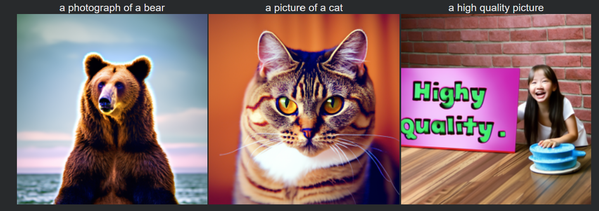
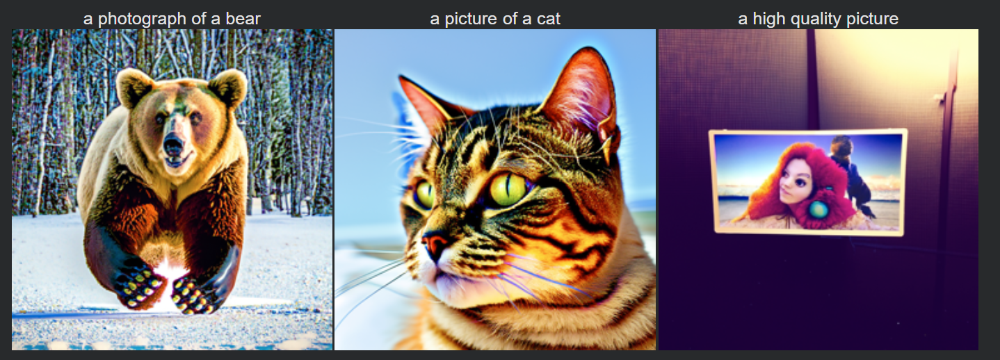
For all parts, I use the following test image provided for the project of the Campanile, unless otherwise stated.
1.1: First, I added noise to the Campanile test image with timesteps (250, 500, 750) using the forard process outlined in lecture:
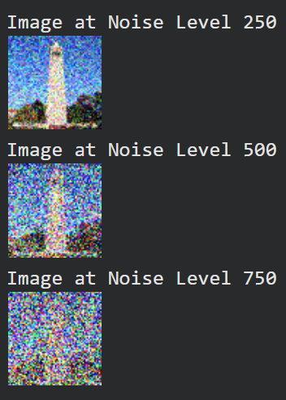
1.2: Then attempted denoising by blurring with the Gaussian:
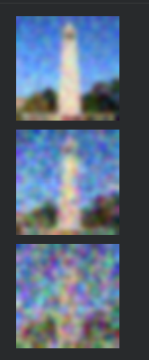
1.3: I then tried One-step denoising using the UNet model. While much better, at higher noise levels it tended to warp the original image:
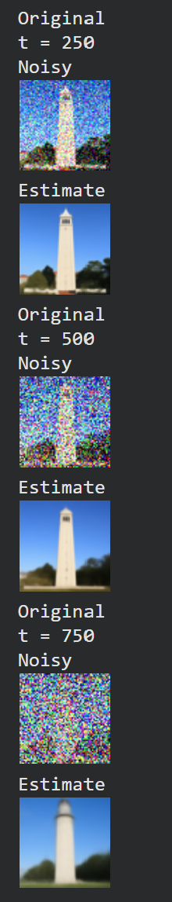
1.4: I then tried Iterative denoising, which applies one-step denoising a bunch of times but skips steps (strided timesteps) for speed. Here are the results, and comparison to one-step denoising and gaussian blurring. Note the iterative denoising has a bit of noise still in it (not sure why), but the overall image is much clearer than the one-step version and stays more faithful to the \ original image.
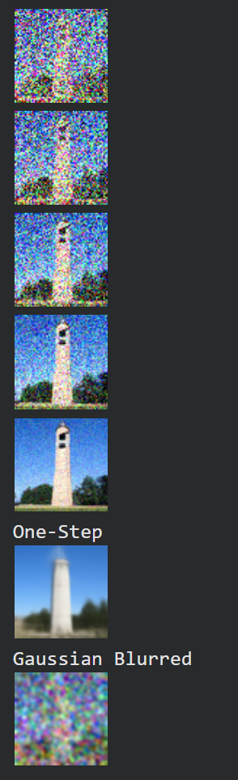
1.5: Next, five samples using no test image, just pictures generated from pure noise using iterative denoising
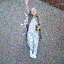
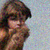
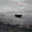
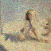
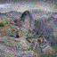
1.6: Then the same thing, but using Classifier Free Guidance with a scale of 7 instead, where we can condition on the model. Note these images are much clearer.
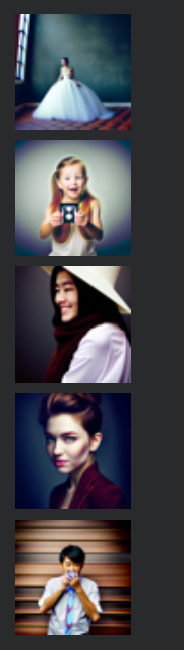
Using the SDEdit Algorithm, we can "edit" pictures by forcing noise back towards a natural image, in this case the test images. In addition to the Campanile test image, which I'll refer to as image 1, I have the following two test images, labelled 2 and 3 respectively:
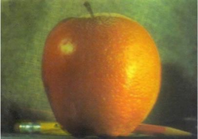
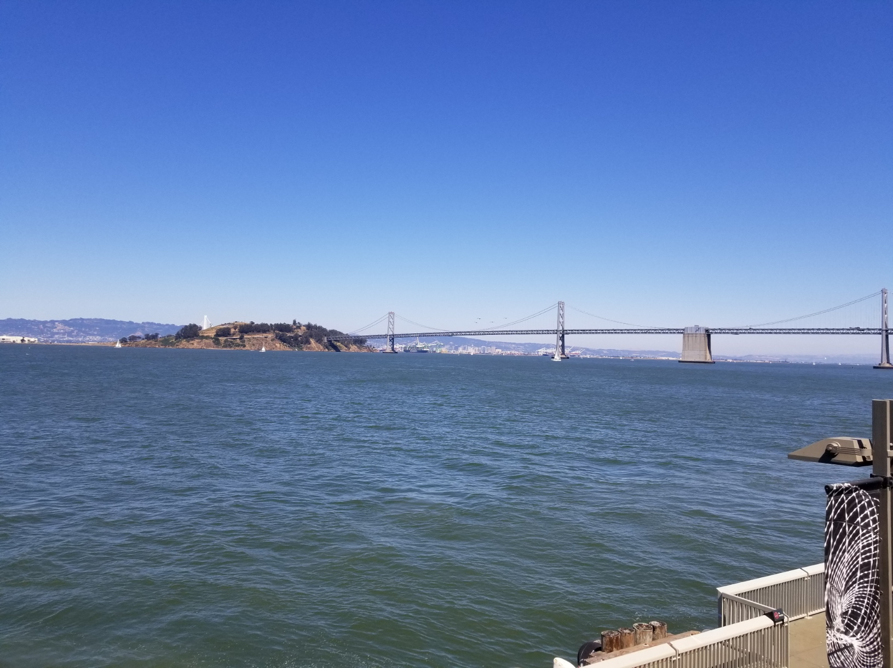
Note, like image 1, these are resized to 64x64 for speed as well, so quality varies (especially since image 3 is a landscape picture with much higher resolution.) For part 1.7, I applied the SDEdit Algorithm.
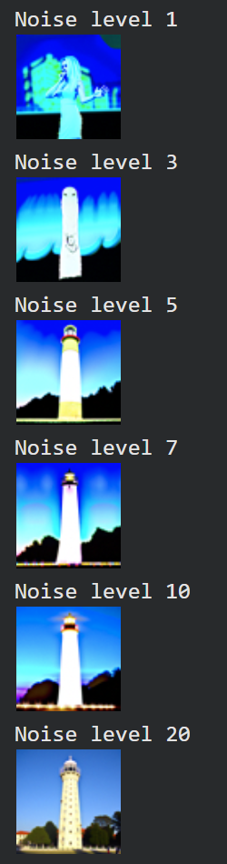
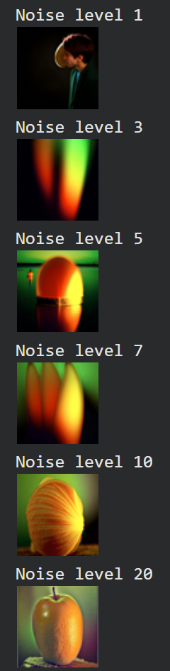
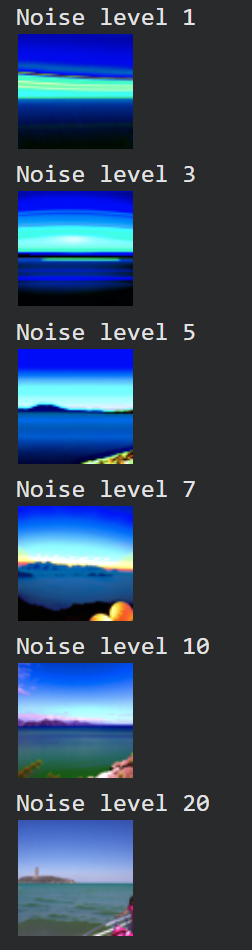
1.7.1: The procedure also works on random web images and hand drawn images. We can force noise back to the natural image manifold by "guiding" the model towards
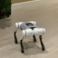
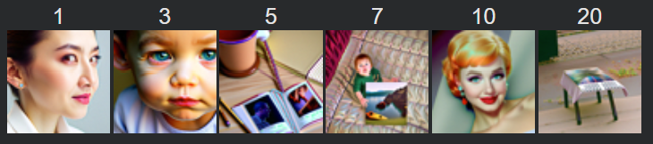
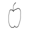
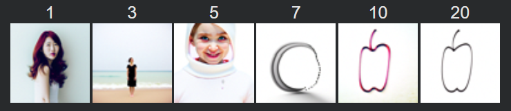
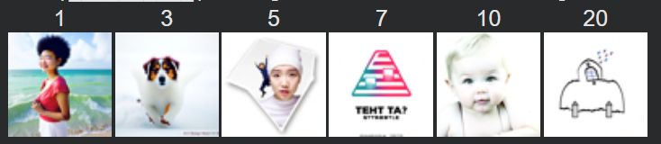
1.7.2: I then applied inpainting to the original test images. We can essentially use inpainting to designate an area to generate a new image by using a mask. Everything outside of the mask stays the same, while the model acts on the area inside the mask.
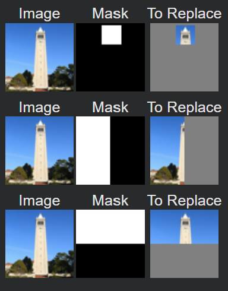
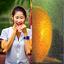
1.7.3: Now, I do the same thing as SDEdit, but now attempt to guide the model using a text prompt. Unfortunately with my custom prompts the model didn't really work well, so here's one of the failed attempts. You can see the model try to fit the generated image, then fail as noise gets higher.
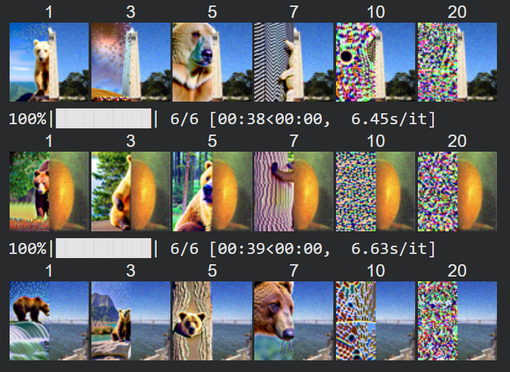
For part 1.8, I applied the algorithm outlined in the instructions by modifying my CFG function and changing how I calculate epsilon. Now, we can generate visual anagrams. Here's a few sample, plus the used prompts:
For part 1.9, we can recreate hybrid images by taking the low frequencies of one prompt and the high frequencies of another prompt. Here are a couple samples plus prompts: